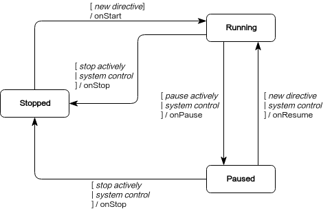

技能
技能是 Cruzr 的一种应用组件，用于接收用户指令执行机器人行为，同时接受系统对其中行为的控制。一个技能包含一组相关 指令 的集合，代表着一组机器人行为，相应地接受相关指令并执行相关行为。
作为 Cruzr 一个整体的控制单元，技能还接收启动、暂停、恢复、停止等系统控制通知。在接收到控制通知时，技能相应地控制其内部机器人行为的启动、暂停、恢复、停止。一个技能执行的行为可能会与其他技能执行的行为或者系统状态发生冲突，控制通知的作用便是辅助系统处理这些行为冲突。Cruzr 系统检测到行为冲突后，会进行决策并向涉及行为冲突的技能发出控制通知，技能再对其行为进行实际的控制，从而让冲突得到最终的处理。
技能包括 普通技能 和 后台技能 。两者的区别在于，后台技能
没有暂停、恢复状态改变，可以常驻后台。
Cruzr内置一套技能打断逻辑，规定了系统中定义的各个技能之间相互打断的规则。 打断规则包括： 1、拒绝进入新的技能，例如：机器人当前在急停时，导航，语音等技能是无法进入的。 2、新进入技能和当前技能共存，例如：去充电的途中，触碰电子皮肤不打断。 3、新进入技能打断当前技能，例如：在机器人播放音乐时，机器人低电量，会进入充电技能，将音乐技能打断。 4、未定义的技能，如果允许启动，则启动不改变其他技能。
创建与配置技能
一个完整的技能必须包含相应的 Java 类和配置文件，Java类用于接收相关指令并执行相关行为，配置文件则用于对系统声明该技能的存在，并告知系统该技能接收的指令集合。
创建技能
创建一个Java 类继承 RobotSkill (普通技能) 或者 RobotBackgroundSkill (后台技能)，以下代码示意创建名为 FooSkill 的 Java 类，实际开发中，类名应该体现出 该技能的大致行为。
package robot.example; import com.ubtrobot.skill.RobotSkill; public class FooSkill extends RobotSkill { }
-
~~~java package robot.example;
import com.ubtrobot.skill.RobotBackgroundSkill;
public class FooSkill extends RobotBackgroundSkill { } ~~~
配置技能
在 app/src/main/res/xml 目录中，创建 robot_manifest.xml 文件，并添加 xml 文件声明和 <manifest>根标签。在 <manifest> 标签内为上一步创建的 FooSkill.java 类添加对应的技能配置，每一个技能组件对应的需要用一个 <skill> 标签来配置。
<?xml version="1.0" encoding="utf-8"?> <manifest> <skill class="robot.example.FooSkill" name="foo"> </skill> </manifest>
以上配置涉及到的标签及其特性是技能要求的最必要的配置，完整配置 如下：
<?xml version="1.0" encoding="utf-8"?> <manifest> <skill class="[string]" name="[string]" background = "boolean" description="[string_resource]"> <directive action="[string]" context="[string]" corpus="[corpus_baz1]" triggerPause="boolean" triggerStop="boolean"/> </skill> </manifest>
上述配置中的 corpus 语音指令语料支持多语言，如下：
<!-- values/arrays.xml --> <resources> <string-array name="corpus_baz1"> <item>Hello</item> <item>Hi</item> </string-array> </resources> <!-- values-zh-rCN/arrays.xml --> <resources> <string-array name="corpus_baz1"> <item>你好</item> <item>嗨</item> </string-array> </resources>
配置文件说明如下
| 标签 | 特性 | 说明 | 必要性 |
|---|---|---|---|
| skill | class | 技能 Java 类名，需要是包含包名的规范名称 | 是 |
| skill | name | 技能名称，一个应用内的技能唯一标识，能简要说明技能的作用 | 是 |
| skill | background | 默认 false |
否 |
| skill | description | 技能详细描述，用于介绍技能的功能作用 | 否 |
| skill.directive | action | 指令唯一标识，不允许重复，一般使用 skillName/intent 格式 | 是 |
| skill.directive | context | 接收该指令需要的 指令上下文，仅在普通技能使用 | 否 |
| skill.directive | corpus | 语音指令语料，支持多语言，不允许重复；仅在语音指令使用 | 否 |
| skill.directive | triggerPause | 当前指令会自动触发技能进入 pause 状态，仅在普通技能使用 | 否 |
| skill.directive | triggerStop | 当前指令会自动触发技能进入 stop 状态 | 否 |
注： 对于后台技能
context,triggerPause无效， 另外技能的triggerPause与triggerStop属性不能共存
指令
指令，可以理解为一种命令，指令的作用是控制技能，通过分发特定指令可以控制相应的技能执行某种行为。
指令对象
Directive 的所有属性包括：
| 常量 | 说明 |
|---|---|
| Directive.SOURCE_IN_PROCESS | 指令来源进程内调用 |
| Directive.SOURCE_INTER_PROCESS | 指令来源进程间调用 |
| Directive.SOURCE_INTER_PROCESS_SPEECH | 指令来源进程间语音调用 |
| Directive.SOURCE_INTER_PROCESS_TIMER | 指令来源进程间定时器调用 |
| Directive.SOURCE_INTER_PROCESS_REMOTE_DEVICE | 指令来源进程间远程程设备调用 |
| 属性 getter | 说明 |
|---|---|
| Directive.action | 指令唯一标识，一般理解为指令意图，意图分发指令的关键信息 |
| Directive.source | 指令来源，指示指令从何处分发。参考 Directive.SOURCE_* 常量 |
| Directive.sourceExtra | 指令来源的额外说明，用于添加用户自定义参数 |
| Directive.paramObj | 指令附带的参数对象 |
| Directive.contentType | 指令附带参数在序列化过程的类型，默认：ContentTypes.PARCELABLE，参考 序列化 |
| Directive.paramBytes | 指令附带参数序列化字节数组 |
| Directive.corpus | 语音指令的语料，即可以触发该指令的语音文本，语音分发指令的关键信息 |
配置指令
在 创建与配置技能 后， Cruzr 系统已经可以识别新创建的技能， 接下来需要给技能声明指令。
在 robot_manifest.xml中的 <skill> 标签内添加所有支持的指令。以下代码以假定支持 2 条指令的 FooSkill 进行声明。以下仅展示最基础配置，完整配置请参考 配置文件 。
<?xml version="1.0" encoding="utf-8"?> <manifest> <skill class="robot.example.FooSkill" name="foo"> <directive action="foo.BAZ1" /> <directive action="foo.BAZ2" /> </skill> </manifest>
接收指令
技能的 robot_manifest.xml中声明的指令 action 必须和 Java 类中 OnDirective 注解修饰的方法一一对应，才能正常接收指令，否则在应用启动时会因检查不通过而抛出 RuntimeException 导致 Crash. 指令 action 来源可以是第三方服务器指定的，也可以是用户自定义的，只要可以标识唯一指令即可。指令的 action 可以是任意风格的字符串，但建议是 “noun[.noun].VERB” 的风格，比如：music.PLAY。
无参指令
在技能的 Java 类中添加指令接收方法，以 OnDirective 注解修饰的公有方法。以下代码以上述声明的 FooSkill 进行说明。
public class FooSkill extends RobotSkill { @OnDirective(action = "foo.BAZ1") public void onBar1Directive() { } @OnDirective(action = "foo.BAZ2") public void onBar2Directive() { } }
带参指令
对于某一个 action 的指令，要么不携带参数，要么携带数据类型和结构均一致的参数。携带参数的情况，可以通过 2 种方式获取到参数对象。以参数对象为 Bar 的情况说明。
- 方式 1：直接从指令接收方法的参数中获取
public class FooSkill extends RobotSkill { @OnDirective(action = "foo.BAZ1") public void onBar1Directive(Directive directive, Bar bar) { // bar is the parameter object. } }
- 方式 2：从指令对象中获取
public class FooSkill extends RobotSkill { @OnDirective(action = "foo.BAZ1") public void onBar1Directive(Directive directive) { Bar bar = directive.getParamObj(Bar.class);//[1] // bar is the parameter object. if (bar == null) { // The directive was not dispatched correctly. } } }
对于来源于进程间的指令，指令参数在分发和接收的过程中依次会经历 序列化和反序列化 的过程。上述 2 种获取参数的方法，指令参数均会被自动的反序列化（由字节数组转化为 Java 对象）。默认情况，Cruzr 仅支持 ContentTypes.PARCELABLE 。
上述方法2中使用了默认的指令参数自动反序列化，如果不使用内置的指令参数自动反序列化，可使用指令参数的字节数组手动反序列化。
public class FooSkill extends RobotSkill { @OnDirective(action = "foo.BAZ1") public void onBar1Directive(Directive directive) { byte[] parameterBytes = directive.getParamBytes(); // Use the bytes to deserialize to the Bar object. } }
注：带参数指令方法第一个参数必须是 Directive
将指令参数直接配置在接收函数参数列表内，有一个弊端就是所有该指令的参数必须都是 Bar， 否则会返回指令参数序列化异常。
语音指令
语音系统服务识别和理解出用户向机器人说的话而得到指令称为语音指令。语音指令的参数对象统一为 UnderstandingResult 类的实例。
public class FooSkill extends RobotSkill { @OnDirective(action = "foo.BAZ1") public void onBar1Directive(Directive directive, UnderstandingResult result) { // Use the result object getting the info of speech directive } }
一般指令的分发是通过比对唯一标识 action 来实现的，而对于语音指令，还可以通过比对语料（用户向机器人说出的话）来实现。在配置技能的 robot_manifest.xml 文件时，为相应的指令配置下添加语料 corpus，如下所示。
<?xml version="1.0" encoding="utf-8"?> <manifest> <skill class="robot.example.FooSkill" name="foo"> <directive action="foo.BAZ1" corpus="@array/corpus_baz1" /> </skill> </manifest>
处理指令
存在一些指令，只有在进入某个上下文，或者理解成满足某个条件时，才开放指令的接收。以音乐播放举例，收到“播放”指令后，音乐开始播放，才开放接收“暂停”的指令。没有播放音乐时，“暂停”指令无效。
<?xml version="1.0" encoding="utf-8"?> <manifest> <skill class="robot.example.FooSkill" name="foo"> <directive action="foo.BAZ1" /> <directive action="foo.BAZ2" context="foo_context" /> </skill> </manifest>
以下代码说明了如何进入及退出上下文：
public class FooSkill extends RobotSkill { private static final String CTX_FOO = "foo_context"; @OnDirective(action = "foo.BAZ1") public void onBar1Directive() { enterContext(CTX_FOO); //enter "foo_context" context // Perform some behavior asynchronously performSomeBehavior(new Callback() { @Override public void onDone() { // After finishing performing the behavior, exit context exitContext(CTX_FOO); } }); } @OnDirective(action = "foo.BAZ2") public void onBar2Directive() { // Be here // only after enterContext(CTX_FOO) and before exitContext(CTX_FOO); } }
注： 代码中使用的指令上下文变量值必须和 配置文件 中的上下文变量值一致才有效。
回复指令
所有指令处理后都必须回复指令发送者，默认情况 Cruzr 系统会自动回复指令处理结果（成功或失败）给调用者。如果需要自主回复结果，可以通过添加指令接收函数的参数 Replier 用于指令处理结果回复。
- 回复成功或者失败
public class FooSkill extends RobotSkill { @OnDirective(action = "foo.BAZ1") public void onBar1Directive(Directive directive, Replier replier) { boolean success = performSomeBehavior(); if (success) { replier.replySuccess(); } else { replier.replyFailure(errorCode, "error message"); } } }
- 回复数据结果
public class FooSkill extends RobotSkill { @OnDirective(action = "foo.BAZ1") public void onBar1Directive(Directive directive, Replier replier) { Result result = performSomeBehavior(); replier.replySuccess(result); } }
- 回复粘滞数据结果
public class FooSkill extends RobotSkill { @OnDirective(action = "foo.BAZ1") public void onBar1Directive(Directive directive, Replier replier) { StickilyResult stickilyResult = performStickilyBehavior(); replier.replyStickily(stickilyResult); Result result = performResultBehavior(); replier.replySuccess(result); } }
注： Replier 必须为指令接收函数参数列表的最后一个
分发指令
可以通过 RobotContext 或者 SkillManager 将指令分发至技能, RobotContext 用于进程内部指令分发， SkillManager 常用于进程间分发， 也可以分发进程内指令(不建议使用)。由于技能 Java 类继承于 RobotContext ，因此技能类本身内部可以分发指令到应用内的其他技能 。
public class Example { public void dispatchDirective(RobotContext robotContext) { // Dispatch a directive without a parameter object. Promise<Void, DispatchException> promise = robotContext.dispatchDirective(action); // Dispatch a directive with a parameter object. promise = robotContext.dispatchDirective(action, arbitraryObject); } ｝
技能状态
技能包含启动、暂停、恢复、停止四个状态，当状态发生变化时，会有相应的通知，技能状态的改变有两种原因，系统控制和自主控制。各个状态的关系如下图所示：

状态通知
当技能状态发生变化，系统就会发出相应的通知，选择性覆盖对应的状态通知方法，并根据通知的状态约束技能 的行为，例如：音乐播放的技能在播放音乐时处于 running 状态，当收到 onPause 的系统通知时，应当暂停播放。
public class FooSkill extends RobotSkill { @Override protected void onStart() { // Ready to receive directives } @Override protected void onResume(boolean directiveWillFollow) { // Resume the paused behavior } @Override protected void onPause(SkillPauseCause cause) { // Pause the performing behaviors } @Override protected void onStop(SkillStopCause cause) { // Stop the performing behaviors } }
其中 onResume(boolean directiveWillFollow) 参数表示技能恢复后是否会立即收到一条指令， 即当前技能的恢复是新的指令触发导致的。onPause(SkillPauseCause cause), onStop(SkillStopCause cause) 参数说明了状态改变的原因，具体含义如下：
- Constants
| 名称 | 说明 |
|---|---|
| BY_SYSTEM_DECISION | 当前结果是系统决策触发 |
| BY_SKILL_MANAGEMENT | 当前结果是技能管理类触发 |
| BY_PAUSING_SELF | 暂停状态是主动触发 |
| BY_STOPPING_SELF | 停止状态是主动触发 |
| BY_INTERNAL_ERROR | 停止状态是内部错误触发 |
- Properties
| 名称 | 说明 |
|---|---|
| cause | 状态触发的原因类型， 参考上述常量 |
| condition | 状态触发的原因，仅在 cause == BY_SYSTEM_DECISION 有效，详情请见 Condition |
控制状态
在接收指令后，技能开始执行行为。当行为执行完毕后，应该调用 stopSelf() 主动停止当前技能。如果不主动停止，可能会造成未执行行为的技能让与其冲突的技能无法执行指令。以下是分别是在技能内部和外部停止技能的方法。例如： 一个导航的技能 ，在接收到导航指令时，开始导航任务，而当导航任务结束时，应当主动调用 stopSelf() 将技能停止，否则，导航技能依旧处于 running 状态，导致其他技能无法执行。以下是分别是在技能内部和外部停止技能的方法
- 内部停止技能
public class FooSkill extends RobotSkill { private void onBehaviorEnd() { stopSelf(); } }
- 外部停止技能
public class Example { public void stopSkill() { Robot.globalContext().stopSkill(skillName); } }
另外，某些情况也需要主动暂停 Skill。比如：用户向机器人说暂停音乐时，应该暂停播放音乐的 Skill。以下是分别是在技能内部和外部暂停技能的方法。 - 内部暂停技能
public class FooSkill extends RobotSkill { private void onPauseNeeded() { pauseSelf(); } }
- 外部暂停技能
public class Example { public void pauseSkill() { Robot.globalContext().pauseSkill(skillName); } }
注： 由于后台技能没有暂停、恢复状态，因此也不存在暂停技能的概念